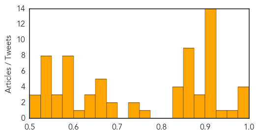
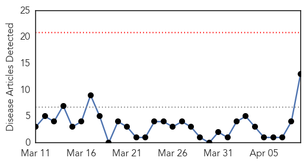
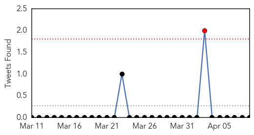

Unknown
30-Day Web Trend
0 alerts, 0 warnings

30-Day Twitter Trend
1 alerts, 0 warnings

Article Locations

Article Confidences
Top Articles:
- 0.999
- Saudi records 11 cases of MERS virus in Jeddah
- 0.998
- Farsnews
- 0.998
- MERS virus kills 67th person in Saudi Arabia
- 0.994
- Saudi emergency dept closed amid MERS outbreak
- 0.973
- Guinea-worm Disease Set to Bow Out as Public Health Threat in Africa - World
- 0.944
- Progress mixed on hospital infections
- 0.917
- Chicago Tribune
- 0.917
- Chicago Tribune
- 0.917
- Chicago Tribune
- 0.917
- Chicago Tribune
- 0.917
- Chicago Tribune
- 0.917
- Chicago Tribune
- 0.917
- Chicago Tribune
- 0.917
- Chicago Tribune
- 0.917
- Chicago Tribune
- 0.917
- Chicago Tribune
- 0.917
- Chicago Tribune
- 0.917
- Chicago Tribune
- 0.916
- Avian Flu Scan for Apr 09, 2014
- 0.910
- The world windows to Thailand
- 0.896
- الاخبار المصورة
- 0.887
- ABC Rural (Australian Broadcasting Corporation)
- 0.881
- The Enemy Within: Tackling Schistosomiasis in Yemen - Yemen
- 0.870
- Germs' DNA decoded to fight food poisoning Republican American
- 0.870
- SD veterinarian prepares horse owners for virus
- 0.866
- Student charged as adult in Pennsylvania stabbing rampage -police
- 0.866
- Top Russian, U.S. diplomats talk twice in one day about Ukraine
- 0.866
- The unveiled Solar Impulse II aircraft is seen at their base in Payerne
- 0.866
- Swiss Defence Minister Maurer speaks during the official unveiling ceremony of the Solar Impulse II aircraft at their base in Payerne
- 0.866
- File photo of workers installing 320 square metres of solar panels on roof of farmstead barn in Binsham
- 0.866
- Russia says West, Ukraine need not worry about troops near border
- 0.859
- San Antonio Syphilis Cases ‘Alarmingly High’
- 0.843
- Thorold Niagara News
- 0.843
- 'It’s an epidemic'
- 0.832
- Norovirus Affects Passengers, Crew on Cruise Ship Off Santa Barbara
- 0.826
- Review of foodborne illness in America
- 0.755
- KRNV, Reno, NV
- 0.734
- Dr. Michael Aiello Recognizes Cancer Control Month by Raising Awareness of the Connection Between Cancer and Gum Disease in Sterling Heights, MI
- 0.728
- Pink eye shuts down America Samoa
- 0.694
- Treliske and Derriford breached targets
- 0.694
- Vietnam hospital lab awarded international accreditation
- 0.675
- UN accused of 'shameful attitude' in S Sudan
- 0.671
- Bacon Prices Rise as US Pork Production Threatened by Deadly Virus
- 0.670
- World Health Day conference on One Health
- 0.660
- Posting criteria violations rampant in health department
- 0.654
- UN Rejects Aid Agency Criticism of South Sudan Mission
- 0.649
- Water of major concern in Solomon Islands
- 0.648
- Chronic malnutrition dogs Côte d’Ivoire’s north - Côte d'Ivoire
- 0.638
- DCMH nurse delivers healthcare, spiritual care
- 0.602
- Confinement of contagious TB patient sought
Showing top 50 articles...
Top Tweets:
- 0.857
- soy popular por un dip de"antipasto" que dicen queda👌 y ahora cda actividad en el trbajo me piden lo mismo osea "people" no soy millonaria 😂
- 0.521
- Everyone 6 months of age and older should get the flu vaccine. It's your best defense against the flu. http://t.co/chUh0kbN1W NPHW
Influenza
30-Day Web Trend
0 alerts, 0 warnings

30-Day Twitter Trend
0 alerts, 0 warnings

Article Locations

Article Confidences

Top Articles:
- 0.984
- Abu Dhabi resident diagnosed with MERS virusUAE
- 0.945
- Scientists say UK wasted £560m on flu drugs that are not proven
- 0.933
- Review raises questions about Tamiflu
- 0.902
- Tamiflu drug 'largely ineffective' in reducing hospitalisation
- 0.852
- Study casts doubt on Tamiflu value
- 0.831
- Government's £424m stock of bird flu drug ‘not fully effective’
- 0.756
- Risk of Food Poisoning Twice as High in Restaurants, Safety Alert Says
- 0.747
- Restaurants Pose Twice the Risk of Foodborne Outbreaks as Homes, CSPI Data Show
- 0.619
- Researchers, regulators and Roche row over stockpiled drug Tamiflu
- 0.602
- New clues to why RSV sends babies to the hospital
- 0.577
- Flu Drugs Challenged in Full Data Review
- 0.532
- Row erupts over influenza drug Tamiflu › News in Science (ABC Science)
- 0.502
- UNC researchers find genetic trigger for RSV-induced infant hospitalizations
Top Tweets:
-
No tweets found for Apr 09, 2014